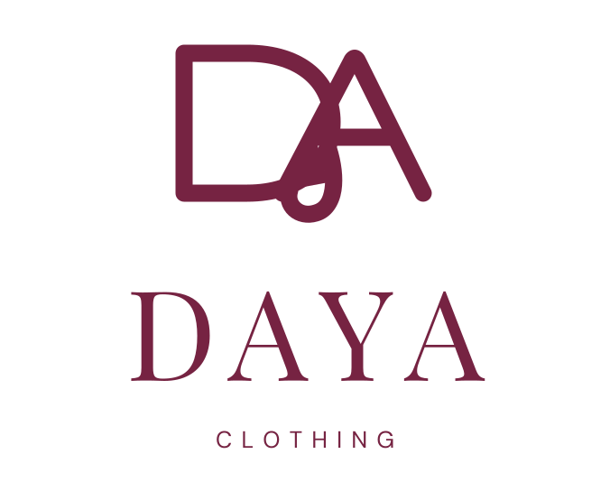

01 / COLOR
Vino y marfil.
Vino · #762342
Marfil · #F8F5EF
El vino firma. El marfil deja respirar. En fondos oscuros, usa la marca blanca.
UNA FIRMA QUE NOS CONECTA
El monograma DA enlazado de la referencia elegida reúne la curva de la D y el gesto de la A. Una firma que acompaña a Daya en la colección, las etiquetas y la gestión diaria.
Ver el estudio editable en Figma ↗
01 / COLOR
El vino firma. El marfil deja respirar. En fondos oscuros, usa la marca blanca.
02 / TIPOGRAFÍA
Playfair Display
DM Sans
DM Mono / datos
Las letras del logo están convertidas a curvas. Las fuentes de la interfaz se sirven desde Daya.
03 / SÍMBOLOS
Solar Linear aporta coherencia a las acciones. Las redes conservan sus símbolos reconocibles.
Solar · 480 Design · CC BY 4.0
MARCA PRINCIPAL
EN NEGATIVO
Conserva espacio libre alrededor de la marca. Evita fotografías con poco contraste.
FIRMAS

Usa el monograma a partir de 32 px para apreciar el lazo. En favicon a 16 px se conserva la silueta; evita añadir el nombre en ese tamaño. Para el nombre completo, reserva al menos 120 px de ancho.
La marca parte de la dirección seleccionada para este proyecto. La disponibilidad para registro no se ha verificado. Los archivos son vectoriales; confirma la reproducción con tu proveedor antes de bordar o imprimir.